Web Server Statistics for smartnarayangaon.com
Web Server Statistics for smartnarayangaon.com
Program started on Tue, Jan 10 2017 at 5:40 PM.
Analyzed requests from Wed, Jan 04 2017 at 5:42 PM to Tue, Jan 10 2017 at 10:49 AM (5.71 days).
Web Server Statistics for smartnarayangaon.comProgram started on Tue, Jan 10 2017 at 5:40 PM.
Analyzed requests from Wed, Jan 04 2017 at 5:42 PM to Tue, Jan 10 2017 at 10:49 AM (5.71 days).
(Go To: Top | General Summary | Monthly Report | Daily Summary | Hourly Summary | Domain Report | Organization Report | Redirected Referrer Report | Failed Referrer Report | Referring Site Report | Browser Report | Browser Summary | Operating System Report | Status Code Report | File Size Report | File Type Report | Directory Report | Request Report)
Successful requests: 407
Average successful requests per day: 71
Successful requests for pages: 52
Average successful requests for pages per day: 8
Failed requests: 33
Redirected requests: 35
Distinct files requested: 59
Distinct hosts served: 14
Data transferred: 10.55 megabytes
Average data transferred per day: 1.85 megabytes
(Go To: Top | General Summary | Monthly Report | Daily Summary | Hourly Summary | Domain Report | Organization Report | Redirected Referrer Report | Failed Referrer Report | Referring Site Report | Browser Report | Browser Summary | Operating System Report | Status Code Report | File Size Report | File Type Report | Directory Report | Request Report)
Each unit ( ) represents 2 requests for pages or part thereof.
) represents 2 requests for pages or part thereof.
| month | #reqs | #pages | |
|---|---|---|---|
| Jan 2017 | 407 | 52 |    |
Busiest month: Jan 2017 (52 requests for pages).
(Go To: Top | General Summary | Monthly Report | Daily Summary | Hourly Summary | Domain Report | Organization Report | Redirected Referrer Report | Failed Referrer Report | Referring Site Report | Browser Report | Browser Summary | Operating System Report | Status Code Report | File Size Report | File Type Report | Directory Report | Request Report)
Each unit () represents 1 request for a page.
| day | #reqs | #pages | |
|---|---|---|---|
| Sun | 78 | 12 |  |
| Mon | 2 | 2 | |
| Tue | 1 | 1 | |
| Wed | 1 | 1 | |
| Thu | 167 | 10 | |
| Fri | 75 | 16 | |
| Sat | 83 | 10 | |
(Go To: Top | General Summary | Monthly Report | Daily Summary | Hourly Summary | Domain Report | Organization Report | Redirected Referrer Report | Failed Referrer Report | Referring Site Report | Browser Report | Browser Summary | Operating System Report | Status Code Report | File Size Report | File Type Report | Directory Report | Request Report)
Each unit () represents 1 request for a page.
| hour | #reqs | #pages | |
|---|---|---|---|
| 0 | 66 | 9 | |
| 1 | 11 | 4 | |
| 2 | 7 | 2 | |
| 3 | 2 | 2 | |
| 4 | 3 | 1 | |
| 5 | 0 | 0 | |
| 6 | 1 | 1 | |
| 7 | 8 | 4 | |
| 8 | 8 | 1 | |
| 9 | 1 | 1 | |
| 10 | 15 | 4 | |
| 11 | 0 | 0 | |
| 12 | 0 | 0 | |
| 13 | 47 | 5 | |
| 14 | 22 | 1 | |
| 15 | 51 | 7 | |
| 16 | 82 | 3 | |
| 17 | 14 | 2 | |
| 18 | 58 | 1 | |
| 19 | 0 | 0 | |
| 20 | 9 | 2 | |
| 21 | 0 | 0 | |
| 22 | 0 | 0 | |
| 23 | 2 | 2 | |
(Go To: Top | General Summary | Monthly Report | Daily Summary | Hourly Summary | Domain Report | Organization Report | Redirected Referrer Report | Failed Referrer Report | Referring Site Report | Browser Report | Browser Summary | Operating System Report | Status Code Report | File Size Report | File Type Report | Directory Report | Request Report)
Listing domains, sorted by the amount of traffic.
| #reqs | %bytes | domain |
|---|---|---|
| 407 | 100% | [unresolved numerical addresses] |
(Go To: Top | General Summary | Monthly Report | Daily Summary | Hourly Summary | Domain Report | Organization Report | Redirected Referrer Report | Failed Referrer Report | Referring Site Report | Browser Report | Browser Summary | Operating System Report | Status Code Report | File Size Report | File Type Report | Directory Report | Request Report)
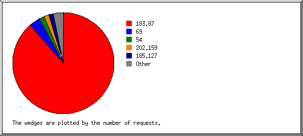
Listing organizations, sorted by the number of requests.
| #reqs | %bytes | organization |
|---|---|---|
| 361 | 87.24% | 183.87 |
| 14 | 3.46% | 69 |
| 7 | 4.51% | 54 |
| 6 | 4.47% | 202.159 |
| 6 | 0.10% | 185.127 |
| 4 | 0.02% | 158.69 |
| 4 | 0.07% | 198.186 |
| 2 | 0.07% | 162.242 |
| 1 | 149.202 | |
| 1 | 0.02% | 89 |
| 1 | 0.04% | 173.79 |
(Go To: Top | General Summary | Monthly Report | Daily Summary | Hourly Summary | Domain Report | Organization Report | Redirected Referrer Report | Failed Referrer Report | Referring Site Report | Browser Report | Browser Summary | Operating System Report | Status Code Report | File Size Report | File Type Report | Directory Report | Request Report)
Listing referring URLs, sorted by the number of redirected requests.
| #reqs | URL |
|---|---|
| 24 | http://smartnarayangaon.com/backend/index.php |
| 14 | http://smartnarayangaon.com/backend/index.php?r=site/login |
(Go To: Top | General Summary | Monthly Report | Daily Summary | Hourly Summary | Domain Report | Organization Report | Redirected Referrer Report | Failed Referrer Report | Referring Site Report | Browser Report | Browser Summary | Operating System Report | Status Code Report | File Size Report | File Type Report | Directory Report | Request Report)
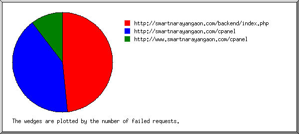
Listing referring URLs, sorted by the number of failed requests.
| #reqs | URL |
|---|---|
| 14 | http://smartnarayangaon.com/backend/index.php |
| 12 | http://smartnarayangaon.com/cpanel |
| 3 | http://www.smartnarayangaon.com/cpanel |
(Go To: Top | General Summary | Monthly Report | Daily Summary | Hourly Summary | Domain Report | Organization Report | Redirected Referrer Report | Failed Referrer Report | Referring Site Report | Browser Report | Browser Summary | Operating System Report | Status Code Report | File Size Report | File Type Report | Directory Report | Request Report)
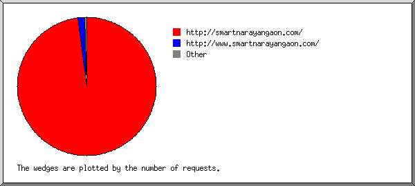
Listing referring sites, sorted by the number of requests.
| #reqs | site |
|---|---|
| 302 | http://smartnarayangaon.com/ |
| 5 | http://www.smartnarayangaon.com/ |
| 1 | http://top10-way.com/ |
(Go To: Top | General Summary | Monthly Report | Daily Summary | Hourly Summary | Domain Report | Organization Report | Redirected Referrer Report | Failed Referrer Report | Referring Site Report | Browser Report | Browser Summary | Operating System Report | Status Code Report | File Size Report | File Type Report | Directory Report | Request Report)
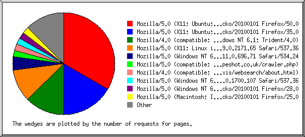
Listing browsers with at least 1 request for a page, sorted by the number of requests for pages.
| #reqs | #pages | browser |
|---|---|---|
| 139 | 16 | Mozilla/5.0 (X11; Ubuntu; Linux x86_64; rv:50.0) Gecko/20100101 Firefox/50.0 |
| 67 | 8 | Mozilla/5.0 (X11; Ubuntu; Linux i686; rv:35.0) Gecko/20100101 Firefox/35.0 |
| 6 | 6 | Mozilla/4.0 (compatible; MSIE 8.0; Windows NT 6.1; Trident/4.0) |
| 155 | 5 | Mozilla/5.0 (X11; Linux i686) AppleWebKit/537.36 (KHTML, like Gecko) Ubuntu Chromium/39.0.2171.65 Chrome/39.0.2171.65 Safari/537.36 |
| 2 | 2 | Mozilla/5.0 (Windows NT 6.1; WOW64) AppleWebKit/534.24 (KHTML, like Gecko) Chrome/11.0.696.71 Safari/534.24 |
| 1 | 1 | Mozilla/5.0 (compatible; GrapeshotCrawler/2.0; +http://www.grapeshot.co.uk/crawler.php) |
| 5 | 1 | Mozilla/4.0 (compatible; http://search.thunderstone.com/texis/websearch/about.html) |
| 6 | 1 | Mozilla/5.0 (Windows NT 6.1; WOW64) AppleWebKit/537.36 (KHTML, like Gecko) Chrome/32.0.1700.107 Safari/537.36 |
| 1 | 1 | Mozilla/5.0 (Windows NT 6.3; WOW64; rv:28.0) Gecko/20100101 Firefox/28.0 |
| 1 | 1 | Mozilla/5.0 (Macintosh; Intel Mac OS X 10.6; rv:25.0) Gecko/20100101 Firefox/25.0 |
| 1 | 1 | Mozilla/5.0 (Windows NT 6.1) AppleWebKit/537.36 (KHTML, like Gecko) Chrome/27.0.1453.90 Safari/537.36 |
| 3 | 1 | Mozilla/5.0 (X11; Ubuntu; Linux x86_64; rv:49.0) Gecko/20100101 Firefox/49.0 |
| 6 | 1 | Mozilla/5.0 (X11; Ubuntu; Linux i686; rv:14.0; ips-agent) Gecko/20100101 Firefox/14.0.1 |
| 6 | 1 | Mozilla/5.0 (X11; Linux x86_64) AppleWebKit/538.1 (KHTML, like Gecko) splash Safari/538.1 |
| 1 | 1 | Mozilla/5.0 (Windows NT 6.0) AppleWebKit/537.11 (KHTML, like Gecko) Chrome/23.0.1271.97 Safari/537.11 |
| 3 | 1 | BlackBerry9000/4.6.0.167 Profile/MIDP-2.0 Configuration/CLDC-1.1 VendorID/102 ips-agent |
(Go To: Top | General Summary | Monthly Report | Daily Summary | Hourly Summary | Domain Report | Organization Report | Redirected Referrer Report | Failed Referrer Report | Referring Site Report | Browser Report | Browser Summary | Operating System Report | Status Code Report | File Size Report | File Type Report | Directory Report | Request Report)
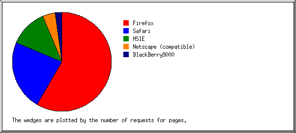
Listing browsers with at least 1 request for a page, sorted by the number of requests for pages.
| # | #reqs | #pages | browser |
|---|---|---|---|
| 1 | 217 | 28 | Firefox |
| 139 | 16 | Firefox/50 | |
| 67 | 8 | Firefox/35 | |
| 6 | 1 | Firefox/14 | |
| 3 | 1 | Firefox/49 | |
| 1 | 1 | Firefox/28 | |
| 1 | 1 | Firefox/25 | |
| 2 | 171 | 11 | Safari |
| 163 | 8 | Safari/537 | |
| 2 | 2 | Safari/534 | |
| 6 | 1 | Safari/538 | |
| 3 | 6 | 6 | MSIE |
| 6 | 6 | MSIE/8 | |
| 4 | 6 | 2 | Netscape (compatible) |
| 5 | 3 | 1 | BlackBerry9000 |
| 3 | 1 | BlackBerry9000/4 |
(Go To: Top | General Summary | Monthly Report | Daily Summary | Hourly Summary | Domain Report | Organization Report | Redirected Referrer Report | Failed Referrer Report | Referring Site Report | Browser Report | Browser Summary | Operating System Report | Status Code Report | File Size Report | File Type Report | Directory Report | Request Report)
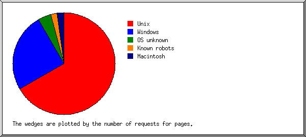
Listing operating systems, sorted by the number of requests for pages.
| # | #reqs | #pages | OS |
|---|---|---|---|
| 1 | 376 | 32 | Unix |
| 376 | 32 | Linux | |
| 2 | 17 | 12 | Windows |
| 17 | 12 | Unknown Windows | |
| 3 | 8 | 2 | OS unknown |
| 4 | 1 | 1 | Known robots |
| 5 | 1 | 1 | Macintosh |
(Go To: Top | General Summary | Monthly Report | Daily Summary | Hourly Summary | Domain Report | Organization Report | Redirected Referrer Report | Failed Referrer Report | Referring Site Report | Browser Report | Browser Summary | Operating System Report | Status Code Report | File Size Report | File Type Report | Directory Report | Request Report)
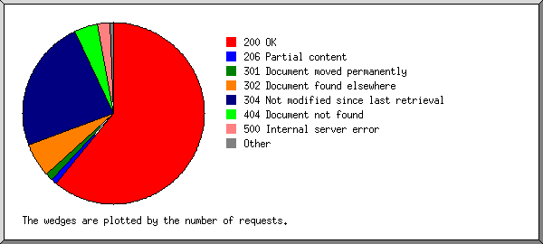
Listing status codes, sorted numerically.
| #reqs | status code |
|---|---|
| 289 | 200 OK |
| 5 | 206 Partial content |
| 6 | 301 Document moved permanently |
| 29 | 302 Document found elsewhere |
| 113 | 304 Not modified since last retrieval |
| 3 | 403 Access forbidden |
| 20 | 404 Document not found |
| 10 | 500 Internal server error |
(Go To: Top | General Summary | Monthly Report | Daily Summary | Hourly Summary | Domain Report | Organization Report | Redirected Referrer Report | Failed Referrer Report | Referring Site Report | Browser Report | Browser Summary | Operating System Report | Status Code Report | File Size Report | File Type Report | Directory Report | Request Report)
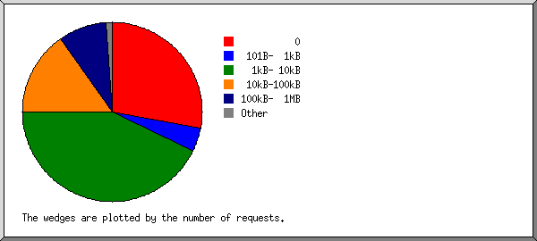
| size | #reqs | %bytes |
|---|---|---|
| 0 | 114 | |
| 1B- 10B | 1 | |
| 11B- 100B | 3 | |
| 101B- 1kB | 17 | 0.06% |
| 1kB- 10kB | 174 | 6.64% |
| 10kB-100kB | 62 | 18.48% |
| 100kB- 1MB | 36 | 74.82% |
(Go To: Top | General Summary | Monthly Report | Daily Summary | Hourly Summary | Domain Report | Organization Report | Redirected Referrer Report | Failed Referrer Report | Referring Site Report | Browser Report | Browser Summary | Operating System Report | Status Code Report | File Size Report | File Type Report | Directory Report | Request Report)
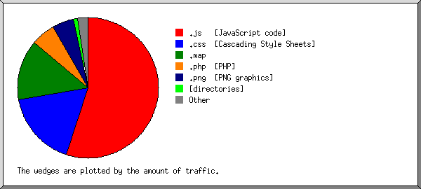
Listing extensions with at least 0.1% of the traffic, sorted by the amount of traffic.
| #reqs | %bytes | extension |
|---|---|---|
| 139 | 54.97% | .js [JavaScript code] |
| 59 | 17.21% | .css [Cascading Style Sheets] |
| 4 | 14.07% | .map |
| 115 | 5.47% | .php [PHP] |
| 9 | 4.92% | .png [PNG graphics] |
| 52 | 1.06% | [directories] |
| 8 | 0.97% | .jpg [JPEG graphics] |
| 4 | 0.49% | .woff2 |
| 2 | 0.42% | .woff |
| 5 | 0.41% | [no extension] |
| 10 | 0.01% | [not listed: 2 extensions] |
(Go To: Top | General Summary | Monthly Report | Daily Summary | Hourly Summary | Domain Report | Organization Report | Redirected Referrer Report | Failed Referrer Report | Referring Site Report | Browser Report | Browser Summary | Operating System Report | Status Code Report | File Size Report | File Type Report | Directory Report | Request Report)
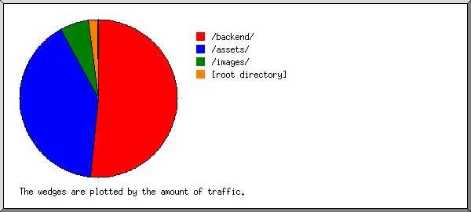
Listing directories with at least 0.01% of the traffic, sorted by the amount of traffic.
| #reqs | %bytes | directory |
|---|---|---|
| 234 | 51.47% | /backend/ |
| 66 | 40.58% | /assets/ |
| 24 | 5.92% | /images/ |
| 69 | 1.90% | [root directory] |
| 14 | 0.14% | /css/ |
(Go To: Top | General Summary | Monthly Report | Daily Summary | Hourly Summary | Domain Report | Organization Report | Redirected Referrer Report | Failed Referrer Report | Referring Site Report | Browser Report | Browser Summary | Operating System Report | Status Code Report | File Size Report | File Type Report | Directory Report | Request Report)
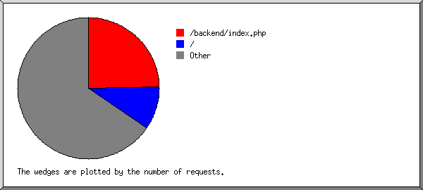
Listing files with at least 20 requests, sorted by the number of requests.
| #reqs | %bytes | last time | file |
|---|---|---|---|
| 101 | 4.90% | Jan/ 8/17 1:18 AM | /backend/index.php |
| 33 | 1.44% | Jan/ 8/17 12:32 AM | /backend/index.php?r=site/login |
| 15 | 0.55% | Jan/ 8/17 12:52 AM | /backend/index.php?r=app/index |
| 11 | 0.63% | Jan/ 8/17 1:01 AM | /backend/index.php?r=categories/index |
| 10 | 0.49% | Jan/ 7/17 2:00 PM | /backend/index.php?r=categories/create |
| 40 | 0.91% | Jan/10/17 10:49 AM | / |
| 266 | 94.19% | Jan/ 8/17 8:48 AM | [not listed: 31 files] |